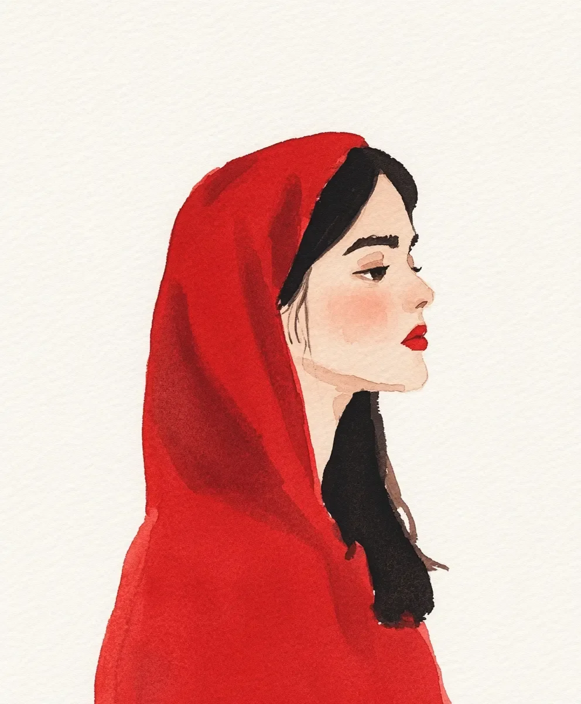

입술을 깨물어 맺힌 핏방울이 어머니가 가장 좋아하는 립스틱 색과 같았고, 지금 그녀의 어깨를 무겁게 누르는 비단의 색과도 같았다.
[Blood pearled on her bottom lip where she’d bitten through, the same shade as her mother’s favorite lipstick, the same shade as the silk that now felt too heavy on her shoulders.]
서연은 분장실 거울 속 자신의 모습을 바라보며, 예식이 시작될 때까지 심장 박동을 세고 있었다. 완벽한 딸이 되기 위해 보낸 23년이 이 순간으로 이어졌다 - 그녀의 미래가 하얀 바탕 위의 날카로운 붉은 점으로 결정화되는 이 숨 막히는 순간으로.
[Seo-yeon stared at her reflection in the dressing room mirror, counting heartbeats until the ceremony would begin. Twenty-three years of being the perfect daughter had led to this moment – this suffocating instant where her future crystallized into a single, sharp point of red against white.]
벨벳 상자 속의 약혼 반지들은 마치 두 개의 비난처럼 놓여있었다. 복도에서는 어머니의 목소리가 들려왔다. 신랑 측 가족들을 능숙한 우아함으로 매료시키는 달콤한 꿀 같은 목소리였다.
[The engagement rings sat in their velvet box like twin accusations. She could hear her mother in the hallway, voice honey-sweet as she charmed the groom’s family with practiced elegance.]
한때 자장가를 속삭이던 그 목소리가 이제는 서연의 세심하게 계획된 미래를 조율하고 있었다. 각각의 세부사항이 외과 의사의 정확성으로 선택되었다: 약혼자를 기다리고 있는 법무법인 파트너 자리, 이미 구매한 강남의 아파트, 서른 살까지 가져야 할 아이들.
[The same voice that had once whispered bedtime stories now orchestrated Seo-yeon’s carefully arranged future, each detail selected with surgical precision: the law firm partnership waiting for her fiancé, the Gangnam apartment already purchased, the children they would have by thirty.]
심지어 그녀의 립스틱 색조차 대대로 내려오는 여성의 덕목을 상징하는 전통적인 붉은 족두리와 맞추어 선택되었다.
[Even her lipstick shade had been chosen to match the family’s traditional red silk hood – a symbol of feminine virtue passed down through generations.]
가슴쪽에서 핸드폰이 진동했다: 등대 불빛처럼 반짝이는 미나의 이름. 3개월 전, 그들은 홍대의 재즈바 밖에서 비를 맞으며 키스했었다. 소주와 가능성의 맛이 어우러진 순간이었다.
[Her phone buzzed against her ribs: Mina’s name flashing like a lighthouse beam. Three months ago, they’d kissed in the rain outside that jazz bar in Hongdae, tasting of soju and possibility.]
이제 미나는 파리로 향하는 비행기에 오르고 있었다. 제과사가 되겠다는 꿈을 좇아가는 동안, 서연은 여기 비단과 기대 속에서 숨이 막혀가고 있었다. 족두리의 무게는 시간이 갈수록 더해져 갔다. 마치 그녀 이전의 모든 순종적인 딸들이 그녀의 어깨를 누르고 있는 것처럼.
[Now Mina was boarding a plane to Paris, chasing her dreams of becoming a pastry chef, while Seo-yeon stood here drowning in silk and expectations. The hood’s weight seemed to increase with each passing second, as if all the obedient daughters before her were pressing down on her shoulders.]
서연은 의식 같은 건 치르지 않고 입술의 피를 닦아냈다. 그 동작으로 손등에는 붉은 자국이 마치 서예처럼 번졌다. 그녀는 어머니가 정성스레 발라준 립스틱을 향해 손을 뻗어 천천히, 의도적으로 입술 위에 새로운 선을 그었다 - 비뚤어지고, 불완전하며, 온전히 그녀다운.
[Without ceremony, Seo-yeon wiped the blood from her lip, leaving a red smear across the back of her hand like calligraphy. She reached for her mother’s carefully applied lipstick and slowly, deliberately, drew a new line across her mouth – crooked, imperfect, entirely her own.]
비단 족두리가 그녀의 어깨에서 미끄러져 내려와 쏟아진 와인처럼 발밑에 고였다. 그녀는 미나에게 두 단어를 입력했다: “기다려줘.”
[The silk hood slipped from her shoulders, pooling at her feet like spilled wine, as she typed out two words to Mina: “Wait up.”]